注：本文已经整理成电子书：《JavaScript正则迷你书》
引言
亲爱的读者朋友，如果你点开了这篇文章，说明你对正则很感兴趣。
想必你也了解正则的重要性，在我看来正则表达式是衡量程序员水平的一个侧面标准。
关于正则表达式的教程，网上也有很多，相信你也看了一些。
与之不同的是，本文的目的是希望所有认真读完的童鞋们，都有实质性的提高。
本文内容共有七章，用JavaScript语言完整地讨论了正则表达式的方方面面。
如果觉得文章某块儿没有说明白清楚，欢迎留言，能力范围之内，老姚必做详细解答。
具体章节如下：
- 引言
- 第一章 正则表达式字符匹配攻略
- 第二章 正则表达式位置匹配攻略
- 第三章 正则表达式括号的作用
- 第四章 正则表达式回溯法原理
- 第五章 正则表达式的拆分
- 第六章 正则表达式的构建
- 第七章 正则表达式编程
- 后记
下面简单地说说每一章都讨论了什么？
正则是匹配模式，要么匹配字符，要么匹配位置。
第1章和第2章以这个角度去讲解了正则的基础。
在正则中可以使用括号捕获数据，要么在API中进行分组引用，要么在正则里进行反向引用。
这是第3章的主题，讲解了正则中括号的作用。
学习正则表达式，是需要了解其匹配原理的。
第4章，讲解了正则了正则表达式的回溯法原理。另外在第6章里，也讲解了正则的表达式的整体工作原理。
不仅能看懂别人的正则，还要自己会写正则。
第5章，是从读的角度，去拆分一个正则表达式，而第6章是从写的角度，去构建一个正则表达式。
学习正则，是为了在真实世界里应用的。
第7章讲解了正则的用法，和相关API需要注意的地方。
如何阅读本文？
我的建议是阅读两遍。第一遍，不求甚解地快速阅读一遍。阅读过程中遇到的问题不妨记录下来，也许阅读完毕后就能解决很多。然后有时间的话，再带着问题去精读第二遍。
深呼吸，开始我们的正则表达式旅程吧。我在终点等你。
第一章 正则表达式字符匹配攻略
正则表达式是匹配模式，要么匹配字符，要么匹配位置。请记住这句话。
然而关于正则如何匹配字符的学习，大部分人都觉得这块比较杂乱。
毕竟元字符太多了，看起来没有系统性，不好记。本章就解决这个问题。
内容包括：
- 两种模糊匹配
- 字符组
- 量词
- 分支结构
- 案例分析
1 两种模糊匹配
如果正则只有精确匹配是没多大意义的，比如/hello/，也只能匹配字符串中的"hello"这个子串。
var regex = /hello/;
console.log( regex.test("hello") );
// => true
复制代码正则表达式之所以强大，是因为其能实现模糊匹配。
而模糊匹配，有两个方向上的“模糊”：横向模糊和纵向模糊。
1.1 横向模糊匹配
横向模糊指的是，一个正则可匹配的字符串的长度不是固定的，可以是多种情况的。
其实现的方式是使用量词。譬如{m,n}，表示连续出现最少m次，最多n次。
比如/ab{2,5}c/表示匹配这样一个字符串：第一个字符是“a”，接下来是2到5个字符“b”，最后是字符“c”。测试如下：
var regex = /ab{2,5}c/g;
var string = "abc abbc abbbc abbbbc abbbbbc abbbbbbc";
console.log( string.match(regex) );
// => ["abbc", "abbbc", "abbbbc", "abbbbbc"]
复制代码注意：案例中用的正则是/ab{2,5}c/g，后面多了g，它是正则的一个修饰符。表示全局匹配，即在目标字符串中按顺序找到满足匹配模式的所有子串，强调的是“所有”，而不只是“第一个”。g是单词global的首字母。
1.2 纵向模糊匹配
纵向模糊指的是，一个正则匹配的字符串，具体到某一位字符时，它可以不是某个确定的字符，可以有多种可能。
其实现的方式是使用字符组。譬如[abc]，表示该字符是可以字符“a”、“b”、“c”中的任何一个。
比如/a[123]b/可以匹配如下三种字符串："a1b"、"a2b"、"a3b"。测试如下：
var regex = /a[123]b/g;
var string = "a0b a1b a2b a3b a4b";
console.log( string.match(regex) );
// => ["a1b", "a2b", "a3b"]
复制代码以上就是本章讲的主体内容，只要掌握横向和纵向模糊匹配，就能解决很大部分正则匹配问题。
接下来的内容就是展开说了，如果对此都比较熟悉的话，可以跳过，直接看本章案例那节。
2. 字符组
需要强调的是，虽叫字符组（字符类），但只是其中一个字符。例如[abc]，表示匹配一个字符，它可以是“a”、“b”、“c”之一。
2.1 范围表示法
如果字符组里的字符特别多的话，怎么办？可以使用范围表示法。
比如[123456abcdefGHIJKLM]，可以写成[1-6a-fG-M]。用连字符-来省略和简写。
因为连字符有特殊用途，那么要匹配“a”、“-”、“z”这三者中任意一个字符，该怎么做呢？
不能写成[a-z]，因为其表示小写字符中的任何一个字符。
可以写成如下的方式：[-az]或[az-]或[a\-z]。即要么放在开头，要么放在结尾，要么转义。总之不会让引擎认为是范围表示法就行了。
2.2 排除字符组
纵向模糊匹配，还有一种情形就是，某位字符可以是任何东西，但就不能是"a"、"b"、"c"。
此时就是排除字符组（反义字符组）的概念。例如[^abc]，表示是一个除"a"、"b"、"c"之外的任意一个字符。字符组的第一位放^（脱字符），表示求反的概念。
当然，也有相应的范围表示法。
2.3 常见的简写形式
有了字符组的概念后，一些常见的符号我们也就理解了。因为它们都是系统自带的简写形式。
\d就是[0-9]。表示是一位数字。记忆方式：其英文是digit（数字）。
\D就是[^0-9]。表示除数字外的任意字符。
\w就是[0-9a-zA-Z_]。表示数字、大小写字母和下划线。记忆方式：w是word的简写，也称单词字符。
\W是[^0-9a-zA-Z_]。非单词字符。
\s是[ \t\v\n\r\f]。表示空白符，包括空格、水平制表符、垂直制表符、换行符、回车符、换页符。记忆方式：s是space character的首字母。
\S是[^ \t\v\n\r\f]。 非空白符。
.就是[^\n\r\u2028\u2029]。通配符，表示几乎任意字符。换行符、回车符、行分隔符和段分隔符除外。记忆方式：想想省略号...中的每个点，都可以理解成占位符，表示任何类似的东西。
如果要匹配任意字符怎么办？可以使用[\d\D]、[\w\W]、[\s\S]和[^]中任何的一个。
3. 量词
量词也称重复。掌握{m,n}的准确含义后，只需要记住一些简写形式。
3.1 简写形式
{m,}表示至少出现m次。
{m}等价于{m,m}，表示出现m次。
?等价于{0,1}，表示出现或者不出现。记忆方式：问号的意思表示，有吗？
+等价于{1,}，表示出现至少一次。记忆方式：加号是追加的意思，得先有一个，然后才考虑追加。
*等价于{0,}，表示出现任意次，有可能不出现。记忆方式：看看天上的星星，可能一颗没有，可能零散有几颗，可能数也数不过来。
3.2 贪婪匹配和惰性匹配
看如下的例子：
var regex = /\d{2,5}/g;
var string = "123 1234 12345 123456";
console.log( string.match(regex) );
// => ["123", "1234", "12345", "12345"]
复制代码其中正则/\d{2,5}/，表示数字连续出现2到5次。会匹配2位、3位、4位、5位连续数字。
但是其是贪婪的，它会尽可能多的匹配。你能给我6个，我就要5个。你能给我3个，我就3要个。反正只要在能力范围内，越多越好。
我们知道有时贪婪不是一件好事（请看文章最后一个例子）。而惰性匹配，就是尽可能少的匹配：
var regex = /\d{2,5}?/g;
var string = "123 1234 12345 123456";
console.log( string.match(regex) );
// => ["12", "12", "34", "12", "34", "12", "34", "56"]
复制代码其中/\d{2,5}?/表示，虽然2到5次都行，当2个就够的时候，就不在往下尝试了。
通过在量词后面加个问号就能实现惰性匹配，因此所有惰性匹配情形如下：
{m,n}?{m,}???+?*?
对惰性匹配的记忆方式是：量词后面加个问号，问一问你知足了吗，你很贪婪吗？
4. 多选分支
一个模式可以实现横向和纵向模糊匹配。而多选分支可以支持多个子模式任选其一。
具体形式如下：(p1|p2|p3)，其中p1、p2和p3是子模式，用|（管道符）分隔，表示其中任何之一。
例如要匹配"good"和"nice"可以使用/good|nice/。测试如下：
var regex = /good|nice/g;
var string = "good idea, nice try.";
console.log( string.match(regex) );
// => ["good", "nice"]
复制代码但有个事实我们应该注意，比如我用/good|goodbye/，去匹配"goodbye"字符串时，结果是"good"：
var regex = /good|goodbye/g;
var string = "goodbye";
console.log( string.match(regex) );
// => ["good"]
复制代码而把正则改成/goodbye|good/，结果是：
var regex = /goodbye|good/g;
var string = "goodbye";
console.log( string.match(regex) );
// => ["goodbye"]
复制代码也就是说，分支结构也是惰性的，即当前面的匹配上了，后面的就不再尝试了。
5. 案例分析
匹配字符，无非就是字符组、量词和分支结构的组合使用罢了。
下面找几个例子演练一下（其中，每个正则并不是只有唯一写法）：
5.1 匹配16进制颜色值
要求匹配：
#ffbbad
#Fc01DF
#FFF
#ffE
分析：
表示一个16进制字符，可以用字符组[0-9a-fA-F]。
其中字符可以出现3或6次，需要是用量词和分支结构。
使用分支结构时，需要注意顺序。
正则如下：
var regex = /#([0-9a-fA-F]{6}|[0-9a-fA-F]{3})/g;
var string = "#ffbbad #Fc01DF #FFF #ffE";
console.log( string.match(regex) );
// => ["#ffbbad", "#Fc01DF", "#FFF", "#ffE"]
复制代码5.2 匹配时间
以24小时制为例。
要求匹配：
23:59
02:07
分析：
共4位数字，第一位数字可以为[0-2]。
当第1位为2时，第2位可以为[0-3]，其他情况时，第2位为[0-9]。
第3位数字为[0-5]，第4位为[0-9]
正则如下：
var regex = /^([01][0-9]|[2][0-3]):[0-5][0-9]$/;
console.log( regex.test("23:59") );
console.log( regex.test("02:07") );
// => true
// => true复制代码如果也要求匹配7:9，也就是说时分前面的0可以省略。
此时正则变成：
var regex = /^(0?[0-9]|1[0-9]|[2][0-3]):(0?[0-9]|[1-5][0-9])$/;
console.log( regex.test("23:59") );
console.log( regex.test("02:07") );
console.log( regex.test("7:9") );
// => true
// => true
// => true复制代码5.3 匹配日期
比如yyyy-mm-dd格式为例。
要求匹配：
2017-06-10
分析：
年，四位数字即可，可用[0-9]{4}。
月，共12个月，分两种情况01、02、……、09和10、11、12，可用(0[1-9]|1[0-2])。
日，最大31天，可用(0[1-9]|[12][0-9]|3[01])。
正则如下：
var regex = /^[0-9]{4}-(0[1-9]|1[0-2])-(0[1-9]|[12][0-9]|3[01])$/;
console.log( regex.test("2017-06-10") );
// => true
复制代码5.4 window操作系统文件路径
要求匹配：
F:\study\javascript\regex\regular expression.pdf
F:\study\javascript\regex\
F:\study\javascript
F:\
分析：
整体模式是: 盘符:\文件夹\文件夹\文件夹\
其中匹配F:\，需要使用[a-zA-Z]:\\，其中盘符不区分大小写，注意\字符需要转义。
文件名或者文件夹名，不能包含一些特殊字符，此时我们需要排除字符组[^\\:*<>|"?\r\n/]来表示合法字符。另外不能为空名，至少有一个字符，也就是要使用量词+。因此匹配“文件夹\”，可用[^\\:*<>|"?\r\n/]+\\。
另外“文件夹\”，可以出现任意次。也就是([^\\:*<>|"?\r\n/]+\\)*。其中括号提供子表达式。
路径的最后一部分可以是“文件夹”，没有\，因此需要添加([^\\:*<>|"?\r\n/]+)?。
最后拼接成了一个看起来比较复杂的正则：
var regex = /^[a-zA-Z]:\\([^\\:*<>|"?\r\n/]+\\)*([^\\:*<>|"?\r\n/]+)?$/;
console.log( regex.test("F:\\study\\javascript\\regex\\regular expression.pdf") );
console.log( regex.test("F:\\study\\javascript\\regex\\") );
console.log( regex.test("F:\\study\\javascript") );
console.log( regex.test("F:\\") );
// => true
// => true
// => true
// => true复制代码其中，JS中字符串表示\时，也要转义。
5.5 匹配id
要求从
<div id="container" class="main"></div>
提取出id="container"。
可能最开始想到的正则是：
var regex = /id=".*"/
var string = '<div id="container" class="main"></div>';
console.log(string.match(regex)[0]);
// => id="container" class="main"
复制代码因为.是通配符，本身就匹配双引号的，而量词*又是贪婪的，当遇到container后面双引号时，不会停下来，会继续匹配，直到遇到最后一个双引号为止。
解决之道，可以使用惰性匹配：
var regex = /id=".*?"/
var string = '<div id="container" class="main"></div>';
console.log(string.match(regex)[0]);
// => id="container"
复制代码当然，这样也会有个问题。效率比较低，因为其匹配原理会涉及到“回溯”这个概念（这里也只是顺便提一下，第四章会详细说明）。可以优化如下：
var regex = /id="[^"]*"/
var string = '<div id="container" class="main"></div>';
console.log(string.match(regex)[0]);
// => id="container"复制代码第1章 小结
字符匹配相关的案例，挺多的，不一而足。
掌握字符组和量词就能解决大部分常见的情形，也就是说，当你会了这二者，JS正则算是入门了。
第二章 正则表达式位置匹配攻略
正则表达式是匹配模式，要么匹配字符，要么匹配位置。请记住这句话。
然而大部分人学习正则时，对于匹配位置的重视程度没有那么高。
本章讲讲正则匹配位置的总总。
内容包括：
- 什么是位置？
- 如何匹配位置？
- 位置的特性
- 几个应用实例分析
1. 什么是位置呢？
位置是相邻字符之间的位置。比如，下图中箭头所指的地方：
2. 如何匹配位置呢？
在ES5中，共有6个锚字符：
^$\b\B(?=p)(?!p)
2.1 ^和$
^（脱字符）匹配开头，在多行匹配中匹配行开头。
$（美元符号）匹配结尾，在多行匹配中匹配行结尾。
比如我们把字符串的开头和结尾用"#"替换（位置可以替换成字符的！）：
var result = "hello".replace(/^|$/g, '#');
console.log(result);
// => "#hello#"
复制代码多行匹配模式时，二者是行的概念，这个需要我们的注意：
var result = "I\nlove\njavascript".replace(/^|$/gm, '#');
console.log(result);
/*
#I#
#love#
#javascript#
*/
复制代码2.2 \b和\B
\b是单词边界，具体就是\w和\W之间的位置，也包括\w和^之间的位置，也包括\w和$之间的位置。
比如一个文件名是"[JS] Lesson_01.mp4"中的\b，如下：
var result = "[JS] Lesson_01.mp4".replace(/\b/g, '#');
console.log(result);
// => "[#JS#] #Lesson_01#.#mp4#"
复制代码为什么是这样呢？这需要仔细看看。
首先，我们知道，\w是字符组[0-9a-zA-Z_]的简写形式，即\w是字母数字或者下划线的中任何一个字符。而\W是排除字符组[^0-9a-zA-Z_]的简写形式，即\W是\w以外的任何一个字符。
此时我们可以看看"[#JS#] #Lesson_01#.#mp4#"中的每一个"#"，是怎么来的。
- 第一个"#"，两边是"["与"J"，是
\W和\w之间的位置。 - 第二个"#"，两边是"S"与"]"，也就是
\w和\W之间的位置。 - 第三个"#"，两边是空格与"L"，也就是
\W和\w之间的位置。 - 第四个"#"，两边是"1"与"."，也就是
\w和\W之间的位置。 - 第五个"#"，两边是"."与"m"，也就是
\W和\w之间的位置。 - 第六个"#"，其对应的位置是结尾，但其前面的字符"4"是
\w，即\w和$之间的位置。
知道了\b的概念后，那么\B也就相对好理解了。
\B就是\b的反面的意思，非单词边界。例如在字符串中所有位置中，扣掉\b，剩下的都是\B的。
具体说来就是\w与\w、\W与\W、^与\W，\W与$之间的位置。
比如上面的例子，把所有\B替换成"#"：
var result = "[JS] Lesson_01.mp4".replace(/\B/g, '#');
console.log(result);
// => "#[J#S]# L#e#s#s#o#n#_#0#1.m#p#4"
复制代码2.3 (?=p)和(?!p)
(?=p)，其中p是一个子模式，即p前面的位置。
比如(?=l)，表示'l'字符前面的位置，例如：
var result = "hello".replace(/(?=l)/g, '#');
console.log(result);
// => "he#l#lo"
复制代码而(?!p)就是(?=p)的反面意思，比如：
var result = "hello".replace(/(?!l)/g, '#');
console.log(result);
// => "#h#ell#o#"
复制代码二者的学名分别是positive lookahead和negative lookahead。
中文翻译分别是正向先行断言和负向先行断言。
ES6中，还支持positive lookbehind和negative lookbehind。
具体是(?<=p)和(?<!p)。
也有书上把这四个东西，翻译成环视，即看看右边或看看左边。
但一般书上，没有很好强调这四者是个位置。
比如(?=p)，一般都理解成：要求接下来的字符与p匹配，但不能包括p的那些字符。
而在本人看来(?=p)就与^一样好理解，就是p前面的那个位置。
3. 位置的特性
对于位置的理解，我们可以理解成空字符""。
比如"hello"字符串等价于如下的形式：
"hello" == "" + "h" + "" + "e" + "" + "l" + "" + "l" + "o" + "";
复制代码也等价于：
"hello" == "" + "" + "hello"
复制代码因此，把/^hello$/写成/^^hello$$$/，是没有任何问题的：
var result = /^^hello$$$/.test("hello");
console.log(result);
// => true
复制代码甚至可以写成更复杂的:
var result = /(?=he)^^he(?=\w)llo$\b\b$/.test("hello");
console.log(result);
// => true
复制代码也就是说字符之间的位置，可以写成多个。
把位置理解空字符，是对位置非常有效的理解方式。
4. 相关案例
4.1 不匹配任何东西的正则
让你写个正则不匹配任何东西
easy，/.^/
因为此正则要求只有一个字符，但该字符后面是开头。
4.2 数字的千位分隔符表示法
比如把"12345678"，变成"12,345,678"。
可见是需要把相应的位置替换成","。
思路是什么呢？
4.2.1 弄出最后一个逗号
使用(?=\d{3}$)就可以做到：
var result = "12345678".replace(/(?=\d{3}$)/g, ',')
console.log(result);
// => "12345,678"
复制代码4.2.2 弄出所有的逗号
因为逗号出现的位置，要求后面3个数字一组，也就是\d{3}至少出现一次。
此时可以使用量词+：
var result = "12345678".replace(/(?=(\d{3})+$)/g, ',')
console.log(result);
// => "12,345,678"
复制代码4.2.3 匹配其余案例
写完正则后，要多验证几个案例，此时我们会发现问题：
var result = "123456789".replace(/(?=(\d{3})+$)/g, ',')
console.log(result);
// => ",123,456,789"
复制代码因为上面的正则，仅仅表示把从结尾向前数，一但是3的倍数，就把其前面的位置替换成逗号。因此才会出现这个问题。
怎么解决呢？我们要求匹配的到这个位置不能是开头。
我们知道匹配开头可以使用^，但要求这个位置不是开头怎么办？
easy，(?!^)，你想到了吗？测试如下：
var string1 = "12345678",
string2 = "123456789";
reg = /(?!^)(?=(\d{3})+$)/g;
var result = string1.replace(reg, ',')
console.log(result);
// => "12,345,678"
result = string2.replace(reg, ',');
console.log(result);
// => "123,456,789"
复制代码4.2.4 支持其他形式
如果要把"12345678 123456789"替换成"12,345,678 123,456,789"。
此时我们需要修改正则，把里面的开头^和结尾$，替换成\b：
var string = "12345678 123456789",
reg = /(?!\b)(?=(\d{3})+\b)/g;
var result = string.replace(reg, ',')
console.log(result);
// => "12,345,678 123,456,789"
复制代码其中(?!\b)怎么理解呢？
要求当前是一个位置，但不是\b前面的位置，其实(?!\b)说的就是\B。
因此最终正则变成了：/\B(?=(\d{3})+\b)/g。
4.3 验证密码问题
密码长度6-12位，由数字、小写字符和大写字母组成，但必须至少包括2种字符。
此题，如果写成多个正则来判断，比较容易。但要写成一个正则就比较困难。
那么，我们就来挑战一下。看看我们对位置的理解是否深刻。
4.3.1 简化
不考虑“但必须至少包括2种字符”这一条件。我们可以容易写出：
var reg = /^[0-9A-Za-z]{6,12}$/;
复制代码4.3.2 判断是否包含有某一种字符
假设，要求的必须包含数字，怎么办？此时我们可以使用(?=.*[0-9])来做。
因此正则变成：
var reg = /(?=.*[0-9])^[0-9A-Za-z]{6,12}$/;
复制代码4.3.3 同时包含具体两种字符
比如同时包含数字和小写字母，可以用(?=.*[0-9])(?=.*[a-z])来做。
因此正则变成：
var reg = /(?=.*[0-9])(?=.*[a-z])^[0-9A-Za-z]{6,12}$/;
复制代码4.3.4 解答
我们可以把原题变成下列几种情况之一：
- 同时包含数字和小写字母
- 同时包含数字和大写字母
- 同时包含小写字母和大写字母
- 同时包含数字、小写字母和大写字母
以上的4种情况是或的关系（实际上，可以不用第4条）。
最终答案是：
var reg = /((?=.*[0-9])(?=.*[a-z])|(?=.*[0-9])(?=.*[A-Z])|(?=.*[a-z])(?=.*[A-Z]))^[0-9A-Za-z]{6,12}$/;
console.log( reg.test("1234567") ); // false 全是数字
console.log( reg.test("abcdef") ); // false 全是小写字母
console.log( reg.test("ABCDEFGH") ); // false 全是大写字母
console.log( reg.test("ab23C") ); // false 不足6位
console.log( reg.test("ABCDEF234") ); // true 大写字母和数字
console.log( reg.test("abcdEF234") ); // true 三者都有
复制代码4.3.5 解惑
上面的正则看起来比较复杂，只要理解了第二步，其余就全部理解了。
/(?=.*[0-9])^[0-9A-Za-z]{6,12}$/
对于这个正则，我们只需要弄明白(?=.*[0-9])^即可。
分开来看就是(?=.*[0-9])和^。
表示开头前面还有个位置（当然也是开头，即同一个位置，想想之前的空字符类比）。
(?=.*[0-9])表示该位置后面的字符匹配.*[0-9]，即，有任何多个任意字符，后面再跟个数字。
翻译成大白话，就是接下来的字符，必须包含个数字。
4.3.6 另外一种解法
“至少包含两种字符”的意思就是说，不能全部都是数字，也不能全部都是小写字母，也不能全部都是大写字母。
那么要求“不能全部都是数字”，怎么做呢？(?!p)出马！
对应的正则是：
var reg = /(?!^[0-9]{6,12}$)^[0-9A-Za-z]{6,12}$/;
复制代码三种“都不能”呢？
最终答案是：
var reg = /(?!^[0-9]{6,12}$)(?!^[a-z]{6,12}$)(?!^[A-Z]{6,12}$)^[0-9A-Za-z]{6,12}$/;
console.log( reg.test("1234567") ); // false 全是数字
console.log( reg.test("abcdef") ); // false 全是小写字母
console.log( reg.test("ABCDEFGH") ); // false 全是大写字母
console.log( reg.test("ab23C") ); // false 不足6位
console.log( reg.test("ABCDEF234") ); // true 大写字母和数字
console.log( reg.test("abcdEF234") ); // true 三者都有
复制代码第二章小结
位置匹配相关的案例，挺多的，不一而足。
掌握匹配位置的这6个锚字符，给我们解决正则问题一个新工具。
第三章 正则表达式括号的作用
不管哪门语言中都有括号。正则表达式也是一门语言，而括号的存在使这门语言更为强大。
对括号的使用是否得心应手，是衡量对正则的掌握水平的一个侧面标准。
括号的作用，其实三言两语就能说明白，括号提供了分组，便于我们引用它。
引用某个分组，会有两种情形：在JavaScript里引用它，在正则表达式里引用它。
本章内容虽相对简单，但我也要写长点。
内容包括：
- 分组和分支结构
- 捕获分组
- 反向引用
- 非捕获分组
- 相关案例
1. 分组和分支结构
这二者是括号最直觉的作用，也是最原始的功能。
1.1 分组
我们知道/a+/匹配连续出现的“a”，而要匹配连续出现的“ab”时，需要使用/(ab)+/。
其中括号是提供分组功能，使量词+作用于“ab”这个整体，测试如下：
var regex = /(ab)+/g;
var string = "ababa abbb ababab";
console.log( string.match(regex) );
// => ["abab", "ab", "ababab"]
复制代码1.2 分支结构
而在多选分支结构(p1|p2)中，此处括号的作用也是不言而喻的，提供了子表达式的所有可能。
比如，要匹配如下的字符串：
I love JavaScript
I love Regular Expression
可以使用正则：
var regex = /^I love (JavaScript|Regular Expression)$/;
console.log( regex.test("I love JavaScript") );
console.log( regex.test("I love Regular Expression") );
// => true
// => true复制代码如果去掉正则中的括号，即/^I love JavaScript|Regular Expression$/，匹配字符串是"I love JavaScript"和"Regular Expression"，当然这不是我们想要的。
2. 引用分组
这是括号一个重要的作用，有了它，我们就可以进行数据提取，以及更强大的替换操作。
而要使用它带来的好处，必须配合使用实现环境的API。
以日期为例。假设格式是yyyy-mm-dd的，我们可以先写一个简单的正则：
var regex = /\d{4}-\d{2}-\d{2}/;
复制代码然后再修改成括号版的：
var regex = /(\d{4})-(\d{2})-(\d{2})/;
复制代码为什么要使用这个正则呢？
2.1 提取数据
比如提取出年、月、日，可以这么做：
var regex = /(\d{4})-(\d{2})-(\d{2})/;
var string = "2017-06-12";
console.log( string.match(regex) );
// => ["2017-06-12", "2017", "06", "12", index: 0, input: "2017-06-12"]
复制代码match返回的一个数组，第一个元素是整体匹配结果，然后是各个分组（括号里）匹配的内容，然后是匹配下标，最后是输入的文本。（注意：如果正则是否有修饰符g，match返回的数组格式是不一样的）。
另外也可以使用正则对象的exec方法：
var regex = /(\d{4})-(\d{2})-(\d{2})/;
var string = "2017-06-12";
console.log( regex.exec(string) );
// => ["2017-06-12", "2017", "06", "12", index: 0, input: "2017-06-12"]
复制代码同时，也可以使用构造函数的全局属性$1至$9来获取：
var regex = /(\d{4})-(\d{2})-(\d{2})/;
var string = "2017-06-12";
regex.test(string); // 正则操作即可，例如
//regex.exec(string);
//string.match(regex);
console.log(RegExp.$1); // "2017"
console.log(RegExp.$2); // "06"
console.log(RegExp.$3); // "12"
复制代码2.2 替换
比如，想把yyyy-mm-dd格式，替换成mm/dd/yyyy怎么做？
var regex = /(\d{4})-(\d{2})-(\d{2})/;
var string = "2017-06-12";
var result = string.replace(regex, "$2/$3/$1");
console.log(result);
// => "06/12/2017"
复制代码其中replace中的，第二个参数里用$1、$2、$3指代相应的分组。等价于如下的形式：
var regex = /(\d{4})-(\d{2})-(\d{2})/;
var string = "2017-06-12";
var result = string.replace(regex, function() {
return RegExp.$2 + "/" + RegExp.$3 + "/" + RegExp.$1;
});
console.log(result);
// => "06/12/2017"
复制代码也等价于：
var regex = /(\d{4})-(\d{2})-(\d{2})/;
var string = "2017-06-12";
var result = string.replace(regex, function(match, year, month, day) {
return month + "/" + day + "/" + year;
});
console.log(result);
// => "06/12/2017"
复制代码3. 反向引用
除了使用相应API来引用分组，也可以在正则本身里引用分组。但只能引用之前出现的分组，即反向引用。
还是以日期为例。
比如要写一个正则支持匹配如下三种格式：
2016-06-12
2016/06/12
2016.06.12
最先可能想到的正则是:
var regex = /\d{4}(-|\/|\.)\d{2}(-|\/|\.)\d{2}/;
var string1 = "2017-06-12";
var string2 = "2017/06/12";
var string3 = "2017.06.12";
var string4 = "2016-06/12";
console.log( regex.test(string1) ); // true
console.log( regex.test(string2) ); // true
console.log( regex.test(string3) ); // true
console.log( regex.test(string4) ); // true
复制代码其中/和.需要转义。虽然匹配了要求的情况，但也匹配"2016-06/12"这样的数据。
假设我们想要求分割符前后一致怎么办？此时需要使用反向引用：
var regex = /\d{4}(-|\/|\.)\d{2}\1\d{2}/;
var string1 = "2017-06-12";
var string2 = "2017/06/12";
var string3 = "2017.06.12";
var string4 = "2016-06/12";
console.log( regex.test(string1) ); // true
console.log( regex.test(string2) ); // true
console.log( regex.test(string3) ); // true
console.log( regex.test(string4) ); // false
复制代码注意里面的\1，表示的引用之前的那个分组(-|\/|\.)。不管它匹配到什么（比如-），\1都匹配那个同样的具体某个字符。
我们知道了\1的含义后，那么\2和\3的概念也就理解了，即分别指代第二个和第三个分组。
看到这里，此时，恐怕你会有三个问题。
3.1 括号嵌套怎么办？
以左括号（开括号）为准。比如：
var regex = /^((\d)(\d(\d)))\1\2\3\4$/;
var string = "1231231233";
console.log( regex.test(string) ); // true
console.log( RegExp.$1 ); // 123
console.log( RegExp.$2 ); // 1
console.log( RegExp.$3 ); // 23
console.log( RegExp.$4 ); // 3
复制代码我们可以看看这个正则匹配模式：
- 第一个字符是数字，比如说1，
- 第二个字符是数字，比如说2，
- 第三个字符是数字，比如说3，
- 接下来的是
\1，是第一个分组内容，那么看第一个开括号对应的分组是什么，是123， - 接下来的是
\2，找到第2个开括号，对应的分组，匹配的内容是1， - 接下来的是
\3，找到第3个开括号，对应的分组，匹配的内容是23， - 最后的是
\4，找到第3个开括号，对应的分组，匹配的内容是3。
这个问题，估计仔细看一下，就该明白了。
3.2 \10表示什么呢？
另外一个疑问可能是，即\10是表示第10个分组，还是\1和0呢？
答案是前者，虽然一个正则里出现\10比较罕见。测试如下：
var regex = /(1)(2)(3)(4)(5)(6)(7)(8)(9)(#) \10+/;
var string = "123456789# ######"
console.log( regex.test(string) );
// => true复制代码3.3 引用不存在的分组会怎样？
因为反向引用，是引用前面的分组，但我们在正则里引用了不存在的分组时，此时正则不会报错，只是匹配反向引用的字符本身。例如\2，就匹配"\2"。注意"\2"表示对"2"进行了转意。
var regex = /\1\2\3\4\5\6\7\8\9/;
console.log( regex.test("\1\2\3\4\5\6\7\8\9") );
console.log( "\1\2\3\4\5\6\7\8\9".split("") );
复制代码chrome浏览器打印的结果：
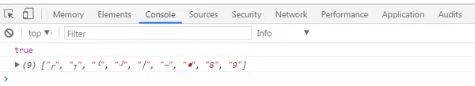
4. 非捕获分组
之前文中出现的分组，都会捕获它们匹配到的数据，以便后续引用，因此也称他们是捕获型分组。
如果只想要括号最原始的功能，但不会引用它，即，既不在API里引用，也不在正则里反向引用。此时可以使用非捕获分组(?:p)，例如本文第一个例子可以修改为：
var regex = /(?:ab)+/g;
var string = "ababa abbb ababab";
console.log( string.match(regex) );
// => ["abab", "ab", "ababab"]
复制代码5. 相关案例
至此括号的作用已经讲完了，总结一句话，就是提供了可供我们使用的分组，如何用就看我们的了。
5.1 字符串trim方法模拟
trim方法是去掉字符串的开头和结尾的空白符。有两种思路去做。
第一种，匹配到开头和结尾的空白符，然后替换成空字符。如：
function trim(str) {
return str.replace(/^\s+|\s+$/g, '');
}
console.log( trim(" foobar ") );
// => "foobar"
复制代码第二种，匹配整个字符串，然后用引用来提取出相应的数据：
function trim(str) {
return str.replace(/^\s*(.*?)\s*$/g, "$1");
}
console.log( trim(" foobar ") );
// => "foobar"
复制代码这里使用了惰性匹配*?，不然也会匹配最后一个空格之前的所有空格的。
当然，前者效率高。
5.2 将每个单词的首字母转换为大写
function titleize(str) {
return str.toLowerCase().replace(/(?:^|\s)\w/g, function(c) {
return c.toUpperCase();
});
}
console.log( titleize('my name is epeli') );
// => "My Name Is Epeli"
复制代码思路是找到每个单词的首字母，当然这里不使用非捕获匹配也是可以的。
5.3 驼峰化
function camelize(str) {
return str.replace(/[-_\s]+(.)?/g, function(match, c) {
return c ? c.toUpperCase() : '';
});
}
console.log( camelize('-moz-transform') );
// => "MozTransform"
复制代码其中分组(.)表示首字母。单词的界定是，前面的字符可以是多个连字符、下划线以及空白符。正则后面的?的目的，是为了应对str尾部的字符可能不是单词字符，比如str是'-moz-transform '。
5.4 中划线化
function dasherize(str) {
return str.replace(/([A-Z])/g, '-$1').replace(/[-_\s]+/g, '-').toLowerCase();
}
console.log( dasherize('MozTransform') );
// => "-moz-transform"
复制代码驼峰化的逆过程。
5.5 html转义和反转义
// 将HTML特殊字符转换成等值的实体
function escapeHTML(str) {
var escapeChars = {
'¢' : 'cent',
'£' : 'pound',
'¥' : 'yen',
'€': 'euro',
'©' :'copy',
'®' : 'reg',
'<' : 'lt',
'>' : 'gt',
'"' : 'quot',
'&' : 'amp',
'\'' : '#39'
};
return str.replace(new RegExp('[' + Object.keys(escapeChars).join('') +']', 'g'), function(match) {
return '&' + escapeChars[match] + ';';
});
}
console.log( escapeHTML('<div>Blah blah blah</div>') );
// => "<div>Blah blah blah</div>";
复制代码其中使用了用构造函数生成的正则，然后替换相应的格式就行了，这个跟本章没多大关系。
倒是它的逆过程，使用了括号，以便提供引用，也很简单，如下：
// 实体字符转换为等值的HTML。
function unescapeHTML(str) {
var htmlEntities = {
nbsp: ' ',
cent: '¢',
pound: '£',
yen: '¥',
euro: '€',
copy: '©',
reg: '®',
lt: '<',
gt: '>',
quot: '"',
amp: '&',
apos: '\''
};
return str.replace(/\&([^;]+);/g, function(match, key) {
if (key in htmlEntities) {
return htmlEntities[key];
}
return match;
});
}
console.log( unescapeHTML('<div>Blah blah blah</div>') );
// => "<div>Blah blah blah</div>"
复制代码通过key获取相应的分组引用，然后作为对象的键。
5.6 匹配成对标签
要求匹配：
<title>regular expression</title>
<p>laoyao bye bye</p>
不匹配：
<title>wrong!</p>
匹配一个开标签，可以使用正则<[^>]+>，
匹配一个闭标签，可以使用<\/[^>]+>，
但是要求匹配成对标签，那就需要使用反向引用，如：
var regex = /<([^>]+)>[\d\D]*<\/\1>/;
var string1 = "<title>regular expression</title>";
var string2 = "<p>laoyao bye bye</p>";
var string3 = "<title>wrong!</p>";
console.log( regex.test(string1) ); // true
console.log( regex.test(string2) ); // true
console.log( regex.test(string3) ); // false
复制代码其中开标签<[^>]+>改成<([^>]+)>，使用括号的目的是为了后面使用反向引用，而提供分组。闭标签使用了反向引用，<\/\1>。
另外[\d\D]的意思是，这个字符是数字或者不是数字，因此，也就是匹配任意字符的意思。
第三章小结
正则中使用括号的例子那可是太多了，不一而足。
重点理解括号可以提供分组，我们可以提取数据，应该就可以了。
例子中的代码，基本没做多少分析，相信你都能看懂的。
第4章 正则表达式回溯法原理
学习正则表达式，是需要懂点儿匹配原理的。
而研究匹配原理时，有两个字出现的频率比较高：“回溯”。
听起来挺高大上，确实还有很多人对此不明不白的。
因此，本章就简单扼要地说清楚回溯到底是什么东西。
内容包括：
- 没有回溯的匹配
- 有回溯的匹配
- 常见的回溯形式
1. 没有回溯的匹配
假设我们的正则是/ab{1,3}c/，其可视化形式是：
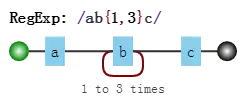
而当目标字符串是"abbbc"时，就没有所谓的“回溯”。其匹配过程是：
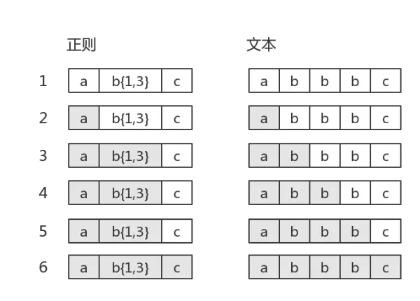
其中子表达式b{1,3}表示“b”字符连续出现1到3次。
2. 有回溯的匹配
如果目标字符串是"abbc"，中间就有回溯。
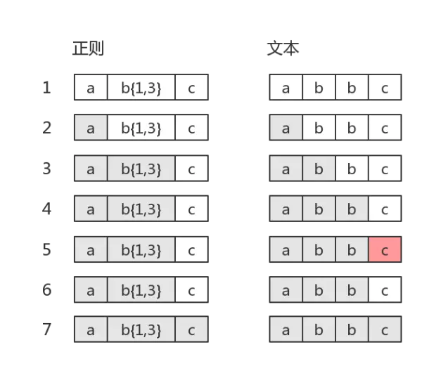
图中第5步有红颜色，表示匹配不成功。此时b{1,3}已经匹配到了2个字符“b”，准备尝试第三个时，结果发现接下来的字符是“c”。那么就认为b{1,3}就已经匹配完毕。然后状态又回到之前的状态（即第6步，与第4步一样），最后再用子表达式c，去匹配字符“c”。当然，此时整个表达式匹配成功了。
图中的第6步，就是“回溯”。
你可能对此没有感觉，这里我们再举一个例子。正则是：
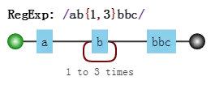
目标字符串是"abbbc"，匹配过程是：
其中第7步和第10步是回溯。第7步与第4步一样，此时b{1,3}匹配了两个"b"，而第10步与第3步一样，此时b{1,3}只匹配了一个"b"，这也是b{1,3}的最终匹配结果。
这里再看一个清晰的回溯，正则是：
目标字符串是："acd"ef，匹配过程是：
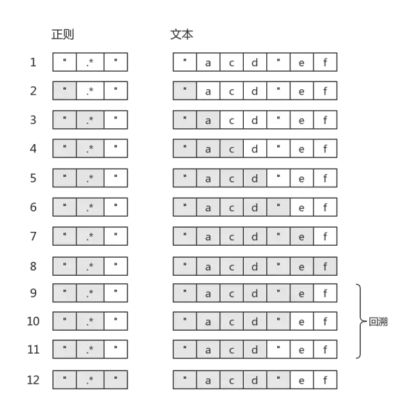
图中省略了尝试匹配双引号失败的过程。可以看出.*是非常影响效率的。
为了减少一些不必要的回溯，可以把正则修改为/"[^"]*"/。
3. 常见的回溯形式
正则表达式匹配字符串的这种方式，有个学名，叫回溯法。
回溯法也称试探法，它的基本思想是：从问题的某一种状态（初始状态）出发，搜索从这种状态出发所能达到的所有“状态”，当一条路走到“尽头”的时候（不能再前进），再后退一步或若干步，从另一种可能“状态”出发，继续搜索，直到所有的“路径”（状态）都试探过。这种不断“前进”、不断“回溯”寻找解的方法，就称作“回溯法”。（copy于百度百科）。
本质上就是深度优先搜索算法。其中退到之前的某一步这一过程，我们称为“回溯”。从上面的描述过程中，可以看出，路走不通时，就会发生“回溯”。即，尝试匹配失败时，接下来的一步通常就是回溯。
道理，我们是懂了。那么JS中正则表达式会产生回溯的地方都有哪些呢？
3.1 贪婪量词
之前的例子都是贪婪量词相关的。比如b{1,3}，因为其是贪婪的，尝试可能的顺序是从多往少的方向去尝试。首先会尝试"bbb"，然后再看整个正则是否能匹配。不能匹配时，吐出一个"b"，即在"bb"的基础上，再继续尝试。如果还不行，再吐出一个，再试。如果还不行呢？只能说明匹配失败了。
虽然局部匹配是贪婪的，但也要满足整体能正确匹配。否则，皮之不存，毛将焉附？
此时我们不禁会问，如果当多个贪婪量词挨着存在，并相互有冲突时，此时会是怎样？
答案是，先下手为强！因为深度优先搜索。测试如下：
var string = "12345";
var regex = /(\d{1,3})(\d{1,3})/;
console.log( string.match(regex) );
// => ["12345", "123", "45", index: 0, input: "12345"]
复制代码其中，前面的\d{1,3}匹配的是"123"，后面的\d{1,3}匹配的是"45"。
3.2 惰性量词
惰性量词就是在贪婪量词后面加个问号。表示尽可能少的匹配，比如：
var string = "12345";
var regex = /(\d{1,3}?)(\d{1,3})/;
console.log( string.match(regex) );
// => ["1234", "1", "234", index: 0, input: "12345"]
复制代码其中\d{1,3}?只匹配到一个字符"1"，而后面的\d{1,3}匹配了"234"。
虽然惰性量词不贪，但也会有回溯的现象。比如正则是：
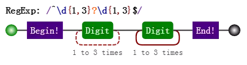
目标字符串是"12345"，匹配过程是：
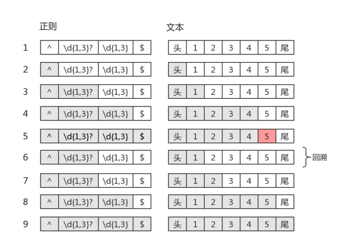
知道你不贪、很知足，但是为了整体匹配成，没办法，也只能给你多塞点了。因此最后\d{1,3}?匹配的字符是"12"，是两个数字，而不是一个。
3.3 分支结构
我们知道分支也是惰性的，比如/can|candy/，去匹配字符串"candy"，得到的结果是"can"，因为分支会一个一个尝试，如果前面的满足了，后面就不会再试验了。
分支结构，可能前面的子模式会形成了局部匹配，如果接下来表达式整体不匹配时，仍会继续尝试剩下的分支。这种尝试也可以看成一种回溯。
比如正则：
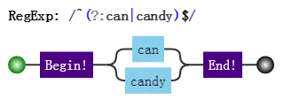
目标字符串是"candy"，匹配过程：
上面第5步，虽然没有回到之前的状态，但仍然回到了分支结构，尝试下一种可能。所以，可以认为它是一种回溯的。
第四章小结
其实回溯法，很容易掌握的。
简单总结就是，正因为有多种可能，所以要一个一个试。直到，要么到某一步时，整体匹配成功了；要么最后都试完后，发现整体匹配不成功。
- 贪婪量词“试”的策略是：买衣服砍价。价钱太高了，便宜点，不行，再便宜点。
- 惰性量词“试”的策略是：卖东西加价。给少了，再多给点行不，还有点少啊，再给点。
- 分支结构“试”的策略是：货比三家。这家不行，换一家吧，还不行，再换。
既然有回溯的过程，那么匹配效率肯定低一些。相对谁呢？相对那些DFA引擎。
而JS的正则引擎是NFA，NFA是“非确定型有限自动机”的简写。
大部分语言中的正则都是NFA，为啥它这么流行呢？
答：你别看我匹配慢，但是我编译快啊，而且我还有趣哦。
第5章 正则表达式的拆分
对于一门语言的掌握程度怎么样，可以有两个角度来衡量：读和写。
不仅要求自己能解决问题，还要看懂别人的解决方案。代码是这样，正则表达式也是这样。
正则这门语言跟其他语言有一点不同，它通常就是一大堆字符，而没有所谓“语句”的概念。
如何能正确地把一大串正则拆分成一块一块的，成为了破解“天书”的关键。
本章就解决这一问题，内容包括：
- 结构和操作符
- 注意要点
- 案例分析
1. 结构和操作符
编程语言一般都有操作符。只要有操作符，就会出现一个问题。当一大堆操作在一起时，先操作谁，又后操作谁呢？为了不产生歧义，就需要语言本身定义好操作顺序，即所谓的优先级。
而在正则表达式中，操作符都体现在结构中，即由特殊字符和普通字符所代表的一个个特殊整体。
JS正则表达式中，都有哪些结构呢？
字符字面量、字符组、量词、锚字符、分组、选择分支、反向引用。
具体含义简要回顾如下（如懂，可以略去不看）：
字面量，匹配一个具体字符，包括不用转义的和需要转义的。比如a匹配字符"a"，又比如
\n匹配换行符，又比如\.匹配小数点。字符组，匹配一个字符，可以是多种可能之一，比如
[0-9]，表示匹配一个数字。也有\d的简写形式。另外还有反义字符组，表示可以是除了特定字符之外任何一个字符，比如[^0-9]，表示一个非数字字符，也有\D的简写形式。量词，表示一个字符连续出现，比如
a{1,3}表示“a”字符连续出现3次。另外还有常见的简写形式，比如a+表示“a”字符连续出现至少一次。锚点，匹配一个位置，而不是字符。比如^匹配字符串的开头，又比如
\b匹配单词边界，又比如(?=\d)表示数字前面的位置。分组，用括号表示一个整体，比如
(ab)+，表示"ab"两个字符连续出现多次，也可以使用非捕获分组(?:ab)+。分支，多个子表达式多选一，比如
abc|bcd，表达式匹配"abc"或者"bcd"字符子串。反向引用，比如
\2，表示引用第2个分组。
其中涉及到的操作符有：
1.转义符\
2.括号和方括号(...)、(?:...)、(?=...)、(?!...)、[...]
3.量词限定符{m}、{m,n}、{m,}、?、*、+
4.位置和序列^、$、\元字符、一般字符
5. 管道符（竖杠）|
上面操作符的优先级从上至下，由高到低。
这里，我们来分析一个正则：
/ab?(c|de*)+|fg/
- 由于括号的存在，所以，
(c|de*)是一个整体结构。 - 在
(c|de*)中，注意其中的量词*，因此e*是一个整体结构。 - 又因为分支结构“|”优先级最低，因此
c是一个整体、而de*是另一个整体。 - 同理，整个正则分成了
a、b?、(...)+、f、g。而由于分支的原因，又可以分成ab?(c|de*)+和fg这两部分。
希望你没被我绕晕，上面的分析可用其可视化形式描述如下：
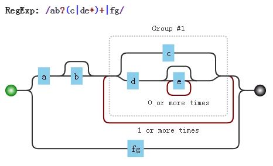
2. 注意要点
关于结构和操作符，还是有几点需要强调：
2.1 匹配字符串整体问题
因为是要匹配整个字符串，我们经常会在正则前后中加上锚字符^和$。
比如要匹配目标字符串"abc"或者"bcd"时，如果一不小心，就会写成/^abc|bcd$/。
而位置字符和字符序列优先级要比竖杠高，故其匹配的结构是：
应该修改成:
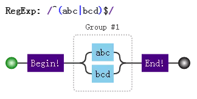
2.2 量词连缀问题
假设，要匹配这样的字符串：
1. 每个字符为a、b、c任选其一
2. 字符串的长度是3的倍数
此时正则不能想当然地写成/^[abc]{3}+$/，这样会报错，说+前面没什么可重复的：
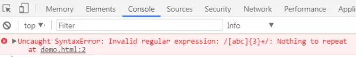
此时要修改成：
2.3 元字符转义问题
所谓元字符，就是正则中有特殊含义的字符。
所有结构里，用到的元字符总结如下：
^$.*+?|\/()[]{}=!:-,
当匹配上面的字符本身时，可以一律转义：
var string = "^$.*+?|\\/[]{}=!:-,";
var regex = /\^\$\.\*\+\?\|\\\/\[\]\{\}\=\!\:\-\,/;
console.log( regex.test(string) );
// => true
复制代码其中string中的\字符也要转义的。
另外，在string中，也可以把每个字符转义，当然，转义后的结果仍是本身：
var string = "^$.*+?|\\/[]{}=!:-,";
var string2 = "\^\$\.\*\+\?\|\\\/\[\]\{\}\=\!\:\-\,";
console.log( string == string2 );
// => true
复制代码现在的问题是，是不是每个字符都需要转义呢？否，看情况。
2.3.1 字符组中的元字符
跟字符组相关的元字符有[]、^、-。因此在会引起歧义的地方进行转义。例如开头的^必须转义，不然会把整个字符组，看成反义字符组。
var string = "^$.*+?|\\/[]{}=!:-,";
var regex = /[\^$.*+?|\\/\[\]{}=!:\-,]/g;
console.log( string.match(regex) );
// => ["^", "$", ".", "*", "+", "?", "|", "\", "/", "[", "]", "{", "}", "=", "!", ":", "-", ","]
复制代码2.3.2 匹配“[abc]”和“{3,5}”
我们知道[abc]，是个字符组。如果要匹配字符串"[abc]"时，该怎么办？
可以写成/\[abc\]/，也可以写成/\[abc]/，测试如下：
var string = "[abc]";
var regex = /\[abc]/g;
console.log( string.match(regex)[0] );
// => "[abc]"
复制代码只需要在第一个方括号转义即可，因为后面的方括号构不成字符组，正则不会引发歧义，自然不需要转义。
同理，要匹配字符串"{3,5}"，只需要把正则写成/\{3,5}/即可。
另外，我们知道量词有简写形式{m,}，却没有{,n}的情况。虽然后者不构成量词的形式，但此时并不会报错。当然，匹配的字符串也是"{,n}"，测试如下：
var string = "{,3}";
var regex = /{,3}/g;
console.log( string.match(regex)[0] );
// => "{,3}"
复制代码2.3.3 其余情况
比如= ! : - ,等符号，只要不在特殊结构中，也不需要转义。
但是，括号需要前后都转义的，如/\(123\)/。
至于剩下的^ $ . * + ? | \ /等字符，只要不在字符组内，都需要转义的。
3. 案例分析
接下来分析两个例子，一个简单的，一个复杂的。
3.1 身份证
正则表达式是：
/^(\d{15}|\d{17}[\dxX])$/
因为竖杠“|”,的优先级最低，所以正则分成了两部分\d{15}和\d{17}[\dxX]。
\d{15}表示15位连续数字。\d{17}[\dxX]表示17位连续数字，最后一位可以是数字可以大小写字母"x"。
可视化如下：
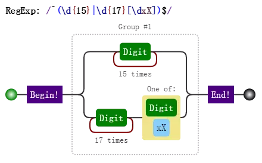
3.2 IPV4地址
正则表达式是：
/^((0{0,2}\d|0?\d{2}|1\d{2}|2[0-4]\d|25[0-5])\.){3}(0{0,2}\d|0?\d{2}|1\d{2}|2[0-4]\d|25[0-5])$/
这个正则，看起来非常吓人。但是熟悉优先级后，会立马得出如下的结构：
((...)\.){3}(...)
上面的两个(...)是一样的结构。表示匹配的是3位数字。因此整个结构是
3位数.3位数.3位数.3位数
然后再来分析(...)：
(0{0,2}\d|0?\d{2}|1\d{2}|2[0-4]\d|25[0-5])(0{0,2}\d|0?\d{2}|1\d{2}|2[0-4]\d|25[0-5])
它是一个多选结构，分成5个部分：
0{0,2}\d，匹配一位数，包括0补齐的。比如，9、09、009；0?\d{2}，匹配两位数，包括0补齐的，也包括一位数；1\d{2}，匹配100到199;2[0-4]\d，匹配200-249；25[0-5]，匹配250-255。
最后来看一下其可视化形式：
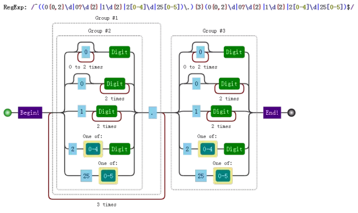
第五章小结
掌握正则表达式中的优先级后，再看任何正则应该都有信心分析下去了。
至于例子，不一而足，没有写太多。
这里稍微总结一下，竖杠的优先级最低，即最后运算。
只要知道这一点，就能读懂大部分正则。
另外关于元字符转义问题，当自己不确定与否时，尽管去转义，总之是不会错的。
第6章 正则表达式的构建
对于一门语言的掌握程度怎么样，可以有两个角度来衡量：读和写。
不仅要看懂别人的解决方案，也要能独立地解决问题。代码是这样，正则表达式也是这样。
与“读”相比，“写”往往更为重要，这个道理是不言而喻的。
对正则的运用，首重就是：如何针对问题，构建一个合适的正则表达式？
本章就解决该问题，内容包括：
- 平衡法则
- 构建正则前提
- 准确性
- 效率
1. 平衡法则
构建正则有一点非常重要，需要做到下面几点的平衡：
- 匹配预期的字符串
- 不匹配非预期的字符串
- 可读性和可维护性
- 效率
2. 构建正则前提
2.1 是否能使用正则
正则太强大了，以至于我们随便遇到一个操作字符串问题时，都会下意识地去想，用正则该怎么做。但我们始终要提醒自己，正则虽然强大，但不是万能的，很多看似很简单的事情，还是做不到的。
比如匹配这样的字符串：1010010001....
虽然很有规律，但是只靠正则就是无能为力。
2.2 是否有必要使用正则
要认识到正则的局限，不要去研究根本无法完成的任务。同时，也不能走入另一个极端：无所不用正则。能用字符串API解决的简单问题，就不该正则出马。
- 比如，从日期中提取出年月日，虽然可以使用正则：
var string = "2017-07-01";
var regex = /^(\d{4})-(\d{2})-(\d{2})/;
console.log( string.match(regex) );
// => ["2017-07-01", "2017", "07", "01", index: 0, input: "2017-07-01"]
复制代码其实，可以使用字符串的split方法来做，即可：
var string = "2017-07-01";
var result = string.split("-");
console.log( result );
// => ["2017", "07", "01"]
复制代码- 比如，判断是否有问号，虽然可以使用：
var string = "?id=xx&act=search";
console.log( string.search(/\?/) );
// => 0
复制代码其实，可以使用字符串的indexOf方法：
var string = "?id=xx&act=search";
console.log( string.indexOf("?") );
// => 0
复制代码- 比如获取子串，虽然可以使用正则：
var string = "JavaScript";
console.log( string.match(/.{4}(.+)/)[1] );
// => Script
复制代码其实，可以直接使用字符串的substring或substr方法来做：
var string = "JavaScript";
console.log( string.substring(4) );
// => Script
复制代码2.3 是否有必要构建一个复杂的正则
比如密码匹配问题，要求密码长度6-12位，由数字、小写字符和大写字母组成，但必须至少包括2种字符。
在第2章里，我们写出了正则是：
/(?!^[0-9]{6,12}$)(?!^[a-z]{6,12}$)(?!^[A-Z]{6,12}$)^[0-9A-Za-z]{6,12}$/
其实可以使用多个小正则来做：
var regex1 = /^[0-9A-Za-z]{6,12}$/;
var regex2 = /^[0-9]{6,12}$/;
var regex3 = /^[A-Z]{6,12}$/;
var regex4 = /^[a-z]{6,12}$/;
function checkPassword(string) {
if (!regex1.test(string)) return false;
if (regex2.test(string)) return false;
if (regex3.test(string)) return false;
if (regex4.test(string)) return false;
return true;
}
复制代码3. 准确性
所谓准确性，就是能匹配预期的目标，并且不匹配非预期的目标。
这里提到了“预期”二字，那么我们就需要知道目标的组成规则。
不然没法界定什么样的目标字符串是符合预期的，什么样的又不是符合预期的。
下面将举例说明，当目标字符串构成比较复杂时，该如何构建正则，并考虑到哪些平衡。
3.1 匹配固定电话
比如要匹配如下格式的固定电话号码：
055188888888
0551-88888888
(0551)88888888
第一步，了解各部分的模式规则。
上面的电话，总体上分为区号和号码两部分（不考虑分机号和+86的情形）。
区号是0开头的3到4位数字，对应的正则是：0\d{2,3}
号码是非0开头的7到8位数字，对应的正则是：[1-9]\d{6,7}
因此，匹配055188888888的正则是：/^0\d{2,3}[1-9]\d{6,7}$/
匹配0551-88888888的正则是：/^0\d{2,3}-[1-9]\d{6,7}$/
匹配(0551)88888888的正则是：/^\(0\d{2,3}\)[1-9]\d{6,7}$/
第二步，明确形式关系。
这三者情形是或的关系，可以构建分支：
/^0\d{2,3}[1-9]\d{6,7}$|^0\d{2,3}-[1-9]\d{6,7}$|^\(0\d{2,3}\)[1-9]\d{6,7}$/
提取公共部分：
/^(0\d{2,3}|0\d{2,3}-|\(0\d{2,3}\))[1-9]\d{6,7}$/
进一步简写：
/^(0\d{2,3}-?|\(0\d{2,3}\))[1-9]\d{6,7}$/
其可视化形式：
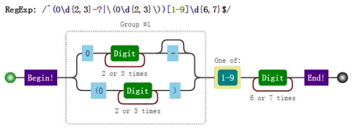
上面的正则构建过程略显罗嗦，但是这样做，能保证正则是准确的。
上述三种情形是或的关系，这一点很重要，不然很容易按字符是否出现的情形把正则写成：
/^\(?0\d{2,3}\)?-?[1-9]\d{6,7}$/
虽然也能匹配上述目标字符串，但也会匹配(0551-88888888这样的字符串。当然，这不是我们想要的。
其实这个正则也不是完美的，因为现实中，并不是每个3位数和4位数都是一个真实的区号。
这就是一个平衡取舍问题，一般够用就行。
3.2 匹配浮点数
要求匹配如下的格式：
1.23、+1.23、-1.23
10、+10、-10
.2、+.2、-.2
可以看出正则分为三部分。
符号部分：[+-]
整数部分：\d+
小数部分：\.\d+
上述三个部分，并不是全部都出现。如果此时很容易写出如下的正则：
/^[+-]?(\d+)?(\.\d+)?$/
此正则看似没问题，但这个正则也会匹配空字符""。
因为目标字符串的形式关系不是要求每部分都是可选的。
要匹配1.23、+1.23、-1.23，可以用/^[+-]?\d+\.\d+$/
要匹配10、+10、-10，可以用/^[+-]?\d+$/
要匹配.2、+.2、-.2，可以用/^[+-]?\.\d+$/
因此整个正则是这三者的或的关系，提取公众部分后是：
/^[+-]?(\d+\.\d+|\d+|\.\d+)$/
其可视化形式是：
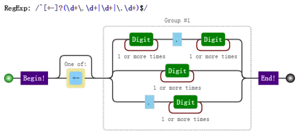
如果要求不匹配+.2和-.2，此时正则变成：
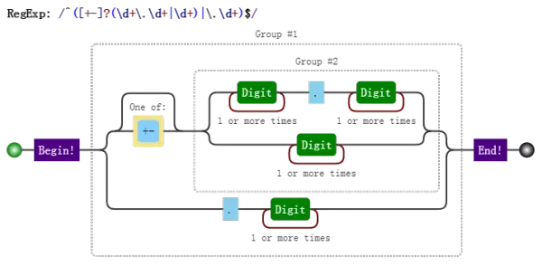
当然，/^[+-]?(\d+\.\d+|\d+|\.\d+)$/也不是完美的，我们也是做了些取舍，比如：
- 它也会匹配012这样以0开头的整数。如果要求不匹配的话，需要修改整数部分的正则。
- 一般进行验证操作之前，都要经过trim和判空。那样的话，也许那个错误正则也就够用了。
- 也可以进一步改写成：
/^[+-]?(\d+)?(\.)?\d+$/，这样我们就需要考虑可读性和可维护性了。
4. 效率
保证了准确性后，才需要是否要考虑要优化。大多数情形是不需要优化的，除非运行的非常慢。什么情形正则表达式运行才慢呢？我们需要考察正则表达式的运行过程（原理）。
正则表达式的运行分为如下的阶段：
- 编译
- 设定起始位置
- 尝试匹配
- 匹配失败的话，从下一位开始继续第3步
- 最终结果：匹配成功或失败
下面以代码为例，来看看这几个阶段都做了什么：
var regex = /\d+/g;
console.log( regex.lastIndex, regex.exec("123abc34def") );
console.log( regex.lastIndex, regex.exec("123abc34def") );
console.log( regex.lastIndex, regex.exec("123abc34def") );
console.log( regex.lastIndex, regex.exec("123abc34def") );
// => 0 ["123", index: 0, input: "123abc34def"]
// => 3 ["34", index: 6, input: "123abc34def"]
// => 8 null
// => 0 ["123", index: 0, input: "123abc34def"]
复制代码具体分析如下：
var regex = /\d+/g;复制代码当生成一个正则时，引擎会对其进行编译。报错与否出现这这个阶段。
regex.exec("123abc34def")
复制代码当尝试匹配时，需要确定从哪一位置开始匹配。一般情形都是字符串的开头，即第0位。
但当使用test和exec方法，且正则有g时，起始位置是从正则对象的lastIndex属性开始。
因此第一次exec是从第0位开始，而第二次是从3开始的。
设定好起始位置后，就开始尝试匹配了。
比如第一次exec，从0开始，去尝试匹配，并且成功地匹配到3个数字。此时结束时的下标是2，因此下一次的起始位置是3。
而第二次，起始下标是3，但第3个字符是“a”，并不是数字。但此时并不会直接报匹配失败，而是移动到下一位置，即从第4位开始继续尝试匹配，但该字符是b，也不是数字。再移动到下一位，是c仍不行，再移动一位是数字3，此时匹配到了两位数字34。此时，下一次匹配的位置是d的位置，即第8位。
第三次，是从第8位开始匹配，直到试到最后一位，也没发现匹配的，因此匹配失败，返回null。同时设置lastIndex为0，即，如要再尝试匹配的话，需从头开始。
从上面可以看出，匹配会出现效率问题，主要出现在上面的第3阶段和第4阶段。
因此，主要优化手法也是针对这两阶段的。
4.1 使用具体型字符组来代替通配符，来消除回溯
而在第三阶段，最大的问题就是回溯。
例如，匹配双引用号之间的字符。如，匹配字符串123"abc"456中的"abc"。
如果正则用的是：/".*"/，，会在第3阶段产生4次回溯（粉色表示.*匹配的内容）：
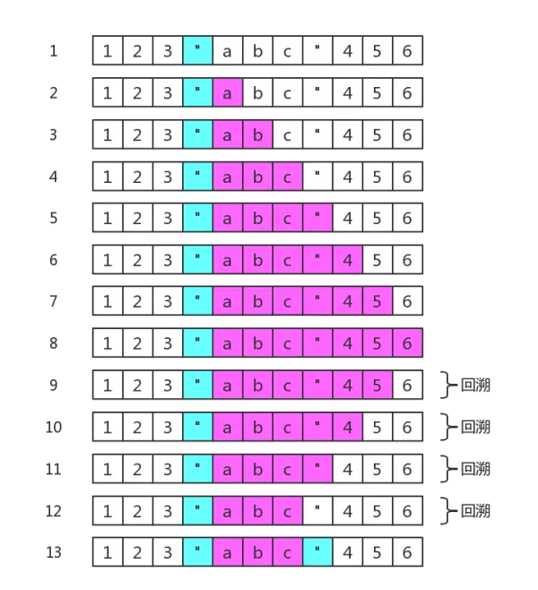
如果正则用的是：/".*?"/，会产生2次回溯（粉色表示.*?匹配的内容）：
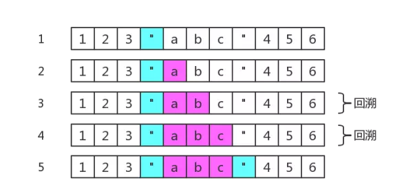
因为回溯的存在，需要引擎保存多种可能中未尝试过的状态，以便后续回溯时使用。注定要占用一定的内存。
此时要使用具体化的字符组，来代替通配符.，以便消除不必要的字符，此时使用正则/"[^"]*"/，即可。
4.2 使用非捕获型分组
因为括号的作用之一是，可以捕获分组和分支里的数据。那么就需要内存来保存它们。
当我们不需要使用分组引用和反向引用时，此时可以使用非捕获分组。例如：
/^[+-]?(\d+\.\d+|\d+|\.\d+)$/
可以修改成：
/^[+-]?(?:\d+\.\d+|\d+|\.\d+)$/
4.3 独立出确定字符
例如/a+/，可以修改成/aa*/。
因为后者能比前者多确定了字符a。这样会在第四步中，加快判断是否匹配失败，进而加快移位的速度。
4.4 提取分支公共部分
比如/^abc|^def/，修改成/^(?:abc|def)/。
又比如/this|that/，修改成/th(?:is|at)/。
这样做，可以减少匹配过程中可消除的重复。
4.5 减少分支的数量，缩小它们的范围
/red|read/，可以修改成/rea?d/。此时分支和量词产生的回溯的成本是不一样的。但这样优化后，可读性会降低的。
第六章小结
本章涉及的内容并不多。
一般情况下，针对某问题能写出一个满足需求的正则，基本上就可以了。
至于准确性和效率方面的追求，纯属看个人要求了。我觉得够用就行了。
关于准确性，本章关心的是最常用的解决思路：
针对每种情形，分别写出正则，然用分支把他们合并在一起，再提取分支公共部分，就能得到准确的正则。
至于优化，本章没有为了凑数，去写一大堆。了解了匹配原理，常见的优化手法也就这么几种。
第七章 正则表达式编程
什么叫知识，能指导我们实践的东西才叫知识。
学习一样东西，如果不能使用，最多只能算作纸上谈兵。正则表达式的学习，也不例外。
掌握了正则表达式的语法后，下一步，也是关键的一步，就是在真实世界中使用它。
那么如何使用正则表达式呢？有哪些关键的点呢？本章就解决这个问题。
内容包括：
- 正则表达式的四种操作
- 相关API注意要点
- 真实案例
1. 正则表达式的四种操作
正则表达式是匹配模式，不管如何使用正则表达式，万变不离其宗，都需要先“匹配”。
有了匹配这一基本操作后，才有其他的操作：验证、切分、提取、替换。
进行任何相关操作，也需要宿主引擎相关API的配合使用。当然，在JS中，相关API也不多。
1.1 验证
验证是正则表达式最直接的应用，比如表单验证。
在说验证之前，先要说清楚匹配是什么概念。
所谓匹配，就是看目标字符串里是否有满足匹配的子串。因此，“匹配”的本质就是“查找”。
有没有匹配，是不是匹配上，判断是否的操作，即称为“验证”。
这里举一个例子，来看看如何使用相关API进行验证操作的。
比如，判断一个字符串中是否有数字。
- 使用
search
var regex = /\d/;
var string = "abc123";
console.log( !!~string.search(regex) );
// => true
复制代码- 使用
test
var regex = /\d/;
var string = "abc123";
console.log( regex.test(string) );
// => true
复制代码- 使用
match
var regex = /\d/;
var string = "abc123";
console.log( !!string.match(regex) );
// => true
复制代码- 使用
exec
var regex = /\d/;
var string = "abc123";
console.log( !!regex.exec(string) );
// => true
复制代码其中，最常用的是test。
1.2 切分
匹配上了，我们就可以进行一些操作，比如切分。
所谓“切分”，就是把目标字符串，切成一段一段的。在JS中使用的是split。
比如，目标字符串是"html,css,javascript"，按逗号来切分：
var regex = /,/;
var string = "html,css,javascript";
console.log( string.split(regex) );
// => ["html", "css", "javascript"]
复制代码又比如，如下的日期格式：
2017/06/26
2017.06.26
2017-06-26
可以使用split“切出”年月日：
var regex = /\D/;
console.log( "2017/06/26".split(regex) );
console.log( "2017.06.26".split(regex) );
console.log( "2017-06-26".split(regex) );
// => ["2017", "06", "26"]
// => ["2017", "06", "26"]
// => ["2017", "06", "26"]
复制代码1.3 提取
虽然整体匹配上了，但有时需要提取部分匹配的数据。
此时正则通常要使用分组引用（分组捕获）功能，还需要配合使用相关API。
这里，还是以日期为例，提取出年月日。注意下面正则中的括号：
match
var regex = /^(\d{4})\D(\d{2})\D(\d{2})$/;
var string = "2017-06-26";
console.log( string.match(regex) );
// =>["2017-06-26", "2017", "06", "26", index: 0, input: "2017-06-26"]
复制代码exec
var regex = /^(\d{4})\D(\d{2})\D(\d{2})$/;
var string = "2017-06-26";
console.log( regex.exec(string) );
// =>["2017-06-26", "2017", "06", "26", index: 0, input: "2017-06-26"]
复制代码test
var regex = /^(\d{4})\D(\d{2})\D(\d{2})$/;
var string = "2017-06-26";
regex.test(string);
console.log( RegExp.$1, RegExp.$2, RegExp.$3 );
// => "2017" "06" "26"
复制代码search
var regex = /^(\d{4})\D(\d{2})\D(\d{2})$/;
var string = "2017-06-26";
string.search(regex);
console.log( RegExp.$1, RegExp.$2, RegExp.$3 );
// => "2017" "06" "26"
复制代码replace
var regex = /^(\d{4})\D(\d{2})\D(\d{2})$/;
var string = "2017-06-26";
var date = [];
string.replace(regex, function(match, year, month, day) {
date.push(year, month, day);
});
console.log(date);
// => ["2017", "06", "26"]
复制代码其中，最常用的是match。
1.4 替换
找，往往不是目的，通常下一步是为了替换。在JS中，使用replace进行替换。
比如把日期格式，从yyyy-mm-dd替换成yyyy/mm/dd：
var string = "2017-06-26";
var today = new Date( string.replace(/-/g, "/") );
console.log( today );
// => Mon Jun 26 2017 00:00:00 GMT+0800 (中国标准时间)
复制代码这里只是简单地应用了一下replace。但，replace方法是强大的，是需要重点掌握的。
2. 相关API注意要点
从上面可以看出用于正则操作的方法，共有6个，字符串实例4个，正则实例2个：
String#search
String#split
String#match
String#replace
RegExp#test
RegExp#exec
本文不打算详细地讲解它们的方方面面细节，具体可以参考《JavaScript权威指南》的第三部分。本文重点列出一些容易忽视的地方，以飨读者。
2.1 search和match的参数问题
我们知道字符串实例的那4个方法参数都支持正则和字符串。
但search和match，会把字符串转换为正则的。
var string = "2017.06.27";
console.log( string.search(".") );
// => 0
//需要修改成下列形式之一
console.log( string.search("\\.") );
console.log( string.search(/\./) );
// => 4
// => 4
console.log( string.match(".") );
// => ["2", index: 0, input: "2017.06.27"]
//需要修改成下列形式之一
console.log( string.match("\\.") );
console.log( string.match(/\./) );
// => [".", index: 4, input: "2017.06.27"]
// => [".", index: 4, input: "2017.06.27"]
console.log( string.split(".") );
// => ["2017", "06", "27"]
console.log( string.replace(".", "/") );
// => "2017/06.27"
复制代码2.2 match返回结果的格式问题
match返回结果的格式，与正则对象是否有修饰符g有关。
var string = "2017.06.27";
var regex1 = /\b(\d+)\b/;
var regex2 = /\b(\d+)\b/g;
console.log( string.match(regex1) );
console.log( string.match(regex2) );
// => ["2017", "2017", index: 0, input: "2017.06.27"]
// => ["2017", "06", "27"]
复制代码没有g，返回的是标准匹配格式，即，数组的第一个元素是整体匹配的内容，接下来是分组捕获的内容，然后是整体匹配的第一个下标，最后是输入的目标字符串。
有g，返回的是所有匹配的内容。
当没有匹配时，不管有无g，都返回null。
2.3 exec比match更强大
当正则没有g时，使用match返回的信息比较多。但是有g后，就没有关键的信息index了。
而exec方法就能解决这个问题，它能接着上一次匹配后继续匹配：
var string = "2017.06.27";
var regex2 = /\b(\d+)\b/g;
console.log( regex2.exec(string) );
console.log( regex2.lastIndex);
console.log( regex2.exec(string) );
console.log( regex2.lastIndex);
console.log( regex2.exec(string) );
console.log( regex2.lastIndex);
console.log( regex2.exec(string) );
console.log( regex2.lastIndex);
// => ["2017", "2017", index: 0, input: "2017.06.27"]
// => 4
// => ["06", "06", index: 5, input: "2017.06.27"]
// => 7
// => ["27", "27", index: 8, input: "2017.06.27"]
// => 10
// => null
// => 0
复制代码其中正则实例lastIndex属性，表示下一次匹配开始的位置。
比如第一次匹配了“2017”，开始下标是0，共4个字符，因此这次匹配结束的位置是3，下一次开始匹配的位置是4。
从上述代码看出，在使用exec时，经常需要配合使用while循环：
var string = "2017.06.27";
var regex2 = /\b(\d+)\b/g;
var result;
while ( result = regex2.exec(string) ) {
console.log( result, regex2.lastIndex );
}
// => ["2017", "2017", index: 0, input: "2017.06.27"] 4
// => ["06", "06", index: 5, input: "2017.06.27"] 7
// => ["27", "27", index: 8, input: "2017.06.27"] 10
复制代码2.4 修饰符g，对exex和test的影响
上面提到了正则实例的lastIndex属性，表示尝试匹配时，从字符串的lastIndex位开始去匹配。
字符串的四个方法，每次匹配时，都是从0开始的，即lastIndex属性始终不变。
而正则实例的两个方法exec、test，当正则是全局匹配时，每一次匹配完成后，都会修改lastIndex。下面让我们以test为例，看看你是否会迷糊：
var regex = /a/g;
console.log( regex.test("a"), regex.lastIndex );
console.log( regex.test("aba"), regex.lastIndex );
console.log( regex.test("ababc"), regex.lastIndex );
// => true 1
// => true 3
// => false 0
复制代码注意上面代码中的第三次调用test，因为这一次尝试匹配，开始从下标lastIndex即3位置处开始查找，自然就找不到了。
如果没有g，自然都是从字符串第0个字符处开始尝试匹配：
var regex = /a/;
console.log( regex.test("a"), regex.lastIndex );
console.log( regex.test("aba"), regex.lastIndex );
console.log( regex.test("ababc"), regex.lastIndex );
// => true 0
// => true 0
// => true 0
复制代码2.5 test整体匹配时需要使用^和$
这个相对容易理解，因为test是看目标字符串中是否有子串匹配正则，即有部分匹配即可。
如果，要整体匹配，正则前后需要添加开头和结尾：
console.log( /123/.test("a123b") );
// => true
console.log( /^123$/.test("a123b") );
// => false
console.log( /^123$/.test("123") );
// => true
复制代码2.6 split相关注意事项
split方法看起来不起眼，但要注意的地方有两个的。
第一，它可以有第二个参数，表示结果数组的最大长度：
var string = "html,css,javascript";
console.log( string.split(/,/, 2) );
// =>["html", "css"]
复制代码第二，正则使用分组时，结果数组中是包含分隔符的：
var string = "html,css,javascript";
console.log( string.split(/(,)/) );
// =>["html", ",", "css", ",", "javascript"]
复制代码2.7 replace是很强大的
《JavaScript权威指南》认为exec是这6个API中最强大的，而我始终认为replace才是最强大的。因为它也能拿到该拿到的信息，然后可以假借替换之名，做些其他事情。
总体来说replace有两种使用形式，这是因为它的第二个参数，可以是字符串，也可以是函数。
当第二个参数是字符串时，如下的字符有特殊的含义：
$1,$2,...,$99匹配第1~99个分组里捕获的文本$&匹配到的子串文本$`匹配到的子串的左边文本$'匹配到的子串的右边文本$$美元符号
例如，把"2,3,5"，变成"5=2+3"：
var result = "2,3,5".replace(/(\d+),(\d+),(\d+)/, "$3=$1+$2");
console.log(result);
// => "5=2+3"
复制代码又例如，把"2,3,5"，变成"222,333,555":
var result = "2,3,5".replace(/(\d+)/g, "$&$&$&");
console.log(result);
// => "222,333,555"
复制代码再例如，把"2+3=5"，变成"2+3=2+3=5=5":
var result = "2+3=5".replace(/=/, "$&$`$&$'$&");
console.log(result);
// => "2+3=2+3=5=5"
复制代码当第二个参数是函数时，我们需要注意该回调函数的参数具体是什么：
"1234 2345 3456".replace(/(\d)\d{2}(\d)/g, function(match, $1, $2, index, input) {
console.log([match, $1, $2, index, input]);
});
// => ["1234", "1", "4", 0, "1234 2345 3456"]
// => ["2345", "2", "5", 5, "1234 2345 3456"]
// => ["3456", "3", "6", 10, "1234 2345 3456"]
复制代码此时我们可以看到replace拿到的信息，并不比exec少。
2.8 使用构造函数需要注意的问题
一般不推荐使用构造函数生成正则，而应该优先使用字面量。因为用构造函数会多写很多\。
var string = "2017-06-27 2017.06.27 2017/06/27";
var regex = /\d{4}(-|\.|\/)\d{2}\1\d{2}/g;
console.log( string.match(regex) );
// => ["2017-06-27", "2017.06.27", "2017/06/27"]
regex = new RegExp("\\d{4}(-|\\.|\\/)\\d{2}\\1\\d{2}", "g");
console.log( string.match(regex) );
// => ["2017-06-27", "2017.06.27", "2017/06/27"]
复制代码2.9 修饰符
ES5中修饰符，共3个：
g全局匹配，即找到所有匹配的，单词是global
i忽略字母大小写，单词ingoreCase
m多行匹配，只影响^和$，二者变成行的概念，即行开头和行结尾。单词是multiline
当然正则对象也有相应的只读属性：
var regex = /\w/img;
console.log( regex.global );
console.log( regex.ignoreCase );
console.log( regex.multiline );
// => true
// => true
// => true
复制代码2.10 source属性
正则实例对象属性，除了global、ingnoreCase、multiline、lastIndex属性之外，还有一个source属性。
它什么时候有用呢？
比如，在构建动态的正则表达式时，可以通过查看该属性，来确认构建出的正则到底是什么：
var className = "high";
var regex = new RegExp("(^|\\s)" + className + "(\\s|$)");
console.log( regex.source )
// => (^|\s)high(\s|$) 即字符串"(^|\\s)high(\\s|$)"
复制代码2.11 构造函数属性
构造函数的静态属性基于所执行的最近一次正则操作而变化。除了是$1,...,$9之外，还有几个不太常用的属性（有兼容性问题）：
RegExp.input最近一次目标字符串，简写成RegExp["$_"]RegExp.lastMatch最近一次匹配的文本，简写成RegExp["$&"]RegExp.lastParen最近一次捕获的文本，简写成RegExp["$+"]RegExp.leftContext目标字符串中lastMatch之前的文本，简写成RegExp["$`"]RegExp.rightContext目标字符串中lastMatch之后的文本，简写成RegExp["$'"]
测试代码如下：
var regex = /([abc])(\d)/g;
var string = "a1b2c3d4e5";
string.match(regex);
console.log( RegExp.input );
console.log( RegExp["$_"]);
// => "a1b2c3d4e5"
console.log( RegExp.lastMatch );
console.log( RegExp["$&"] );
// => "c3"
console.log( RegExp.lastParen );
console.log( RegExp["$+"] );
// => "3"
console.log( RegExp.leftContext );
console.log( RegExp["$`"] );
// => "a1b2"
console.log( RegExp.rightContext );
console.log( RegExp["$'"] );
// => "d4e5"复制代码3. 真实案例
3.1 使用构造函数生成正则表达式
我们知道要优先使用字面量来创建正则，但有时正则表达式的主体是不确定的，此时可以使用构造函数来创建。模拟getElementsByClassName方法，就是很能说明该问题的一个例子。
这里getElementsByClassName函数的实现思路是：
- 比如要获取className为"high"的dom元素；
- 首先生成一个正则：
/(^|\s)high(\s|$)/； - 然后再用其逐一验证页面上的所有dom元素的类名，拿到满足匹配的元素即可。
代码如下(可以直接复制到本地查看运行效果)：
<p class="high">1111</p>
<p class="high">2222</p>
<p>3333</p>
<script>
function getElementsByClassName(className) {
var elements = document.getElementsByTagName("*");
var regex = new RegExp("(^|\\s)" + className + "(\\s|$)");
var result = [];
for (var i = 0; i < elements.length; i++) {
var element = elements[i];
if (regex.test(element.className)) {
result.push(element)
}
}
return result;
}
var highs = getElementsByClassName('high');
highs.forEach(function(item) {
item.style.color = 'red';
});
</script>
复制代码3.2 使用字符串保存数据
一般情况下，我们都愿意使用数组来保存数据。但我看到有的框架中，使用的却是字符串。
使用时，仍需要把字符串切分成数组。虽然不一定用到正则，但总感觉酷酷的，这里分享如下：
var utils = {};
"Boolean|Number|String|Function|Array|Date|RegExp|Object|Error".split("|").forEach(function(item) {
utils["is" + item] = function(obj) {
return {}.toString.call(obj) == "[object " + item + "]";
};
});
console.log( utils.isArray([1, 2, 3]) );
// => true
复制代码3.3 if语句中使用正则替代&&
比如，模拟ready函数，即加载完毕后再执行回调（不兼容ie的）：
var readyRE = /complete|loaded|interactive/;
function ready(callback) {
if (readyRE.test(document.readyState) && document.body) {
callback()
}
else {
document.addEventListener(
'DOMContentLoaded',
function () {
callback()
},
false
);
}
};
ready(function() {
alert("加载完毕！")
});
复制代码3.4 使用强大的replace
因为replace方法比较强大，有时用它根本不是为了替换，只是拿其匹配到的信息来做文章。
这里以查询字符串（querystring）压缩技术为例，注意下面replace方法中，回调函数根本没有返回任何东西。
function compress(source) {
var keys = {};
source.replace(/([^=&]+)=([^&]*)/g, function(full, key, value) {
keys[key] = (keys[key] ? keys[key] + ',' : '') + value;
});
var result = [];
for (var key in keys) {
result.push(key + '=' + keys[key]);
}
return result.join('&');
}
console.log( compress("a=1&b=2&a=3&b=4") );
// => "a=1,3&b=2,4"
复制代码3.5 综合运用
最后这里再做个简单实用的正则测试器。
具体效果如下：
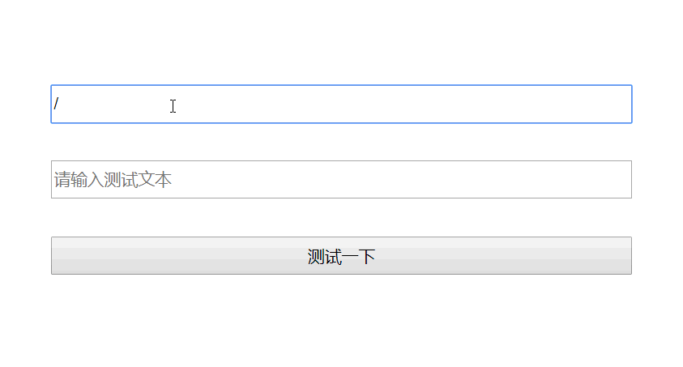
代码，直接贴了，相信你能看得懂：
<section>
<div id="err"></div>
<input id="regex" placeholder="请输入正则表达式">
<input id="text" placeholder="请输入测试文本">
<button id="run">测试一下</button>
<div id="result"></div>
</section>
<style>
section{
display:flex;
flex-direction:column;
justify-content:space-around;
height:300px;
padding:0 200px;
}
section *{
min-height:30px;
}
#err {
color:red;
}
#result{
line-height:30px;
}
.info {
background:#00c5ff;
padding:2px;
margin:2px;
display:inline-block;
}
</style>
<script>
(function() {
// 获取相应dom元素
var regexInput = document.getElementById("regex");
var textInput = document.getElementById("text");
var runBtn = document.getElementById("run");
var errBox = document.getElementById("err");
var resultBox = document.getElementById("result");
// 绑定点击事件
runBtn.onclick = function() {
// 清除错误和结果
errBox.innerHTML = "";
resultBox.innerHTML = "";
// 获取正则和文本
var text = textInput.value;
var regex = regexInput.value;
if (regex == "") {
errBox.innerHTML = "请输入正则表达式";
} else if (text == "") {
errBox.innerHTML = "请输入测试文本";
} else {
regex = createRegex(regex);
if (!regex) return;
var result, results = [];
// 没有修饰符g的话，会死循环
if (regex.global) {
while(result = regex.exec(text)) {
results.push(result);
}
} else {
results.push(regex.exec(text));
}
if (results[0] == null) {
resultBox.innerHTML = "匹配到0个结果";
return;
}
// 倒序是有必要的
for (var i = results.length - 1; i >= 0; i--) {
var result = results[i];
var match = result[0];
var prefix = text.substr(0, result.index);
var suffix = text.substr(result.index + match.length);
text = prefix
+ '<span class="info">'
+ match
+ '</span>'
+ suffix;
}
resultBox.innerHTML = "匹配到" + results.length + "个结果:<br>" + text;
}
};
// 生成正则表达式，核心函数
function createRegex(regex) {
try {
if (regex[0] == "/") {
regex = regex.split("/");
regex.shift();
var flags = regex.pop();
regex = regex.join("/");
regex = new RegExp(regex, flags);
} else {
regex = new RegExp(regex, "g");
}
return regex;
} catch(e) {
errBox.innerHTML = "无效的正则表达式";
return false;
}
}
})();
</script>复制代码第七章小结
相关API的注意点，本章基本上算是一网打尽了。
至于文中的例子，都是点睛之笔，没有详细解析。如有理解不透的，建议自己敲一敲。
后记
其实本文首发于：正则表达式系列总结 - 知乎专栏
原文是一个系列。一直等到老姚成为掘金的专栏作者，经过仔细考虑，在掘金平台没有采用系列形式，而是合成为了一篇文章。这样既便于读者阅读，最起码能一气呵成地阅读。同时也便于作者统一回复留言。
文章要结束了，最后还要有几点说明。
1. 需要注意的地方
本文主要讨论的是JavaScript的正则表达式，更精确地说是ES5的正则表达式。
JavaScript的正则表达式引擎是传统型NFA的，因此本系列的讨论是适合任何一门正则引擎是传统型NFA的编程语言。当然，市面上大部分语言的正则引擎都是这种的。而JS里正则涉及到的所有语法要点，是这种引擎支持的核心子集。也就是说，要学正则表达式，不妨以JS正则为出发点。
2. 参考资料
当然本文不是无本之末。主要参考的是几本书籍。
以下书籍中核心章节都认真阅读过，甚至阅读多遍。
《JavaScript权威指南》，看完本系列，再去看书中的第10章，你就知道了什么叫字字珠玑。
《精通正则表达式》，权威且比较杂乱，我阅读的第一本正则表达式书籍。
《正则表达式必知必会》，这是我看的第二本正则，看完后，确定自己算是入门了。
《正则指引》，《精通正则表达式》的译者写的，相对清晰。
《正则表达式入门》，我看的是英文版的，对于已经入门的我，基本没多少收获了。
《正则表达式经典实例》，除了第3章，比较杂外，也有收获，以实例为主导的一本书。
《JavaScript Regular Expressions》，为数不多转讲JS正则的。页数不多，也有收获。
《高性能JavaScript 》第5章，我看的是英文版的。第5章，讲了回溯和优化。
《JavaScript忍者秘籍》第7章，大概讲了一下正则的用法，几个例子还不错。
《JavaScript高级程序设计》第5.4节，比较简短的介绍。
使用的工具：
Regulex，一款可视化工具
ProcessOn - 免费在线作图，实时协作
LICEcap – 灵活好用，GIF 屏幕录制工具
3. 个人感悟
要多写文章的
首先，我十分感谢读者。读者能在信息泛滥的网络里，点击我的文章进来瞧两眼，这都是对其注意力的消费。更何况，还有很多童鞋都认真读了，甚至给我挑毛病，这都是对我的帮助。不知有多少童鞋是从头读到这里的，不妨留言打卡，让我知道你是用心的读者，而并非简简单单地收藏一下，然后就再也不曾看过了。
说到要写文章，其目的是以教为学。看似为了教，其实是为了学。能教会别人才算自己真正学会了，最起码形成了文字，通过了自己的语言逻辑这一关。如果还能有人指出你的错误认知，那样收获就更大了，何乐而不为呢？
很多书中都提到类似的观点，例如《知道做到》《好好学习》《与时间做朋友》《暗时间》等。
以教为学的其他手段
当然，以教为学的手段还有很多，比如翻译一本书。我私下已经翻译了好几本（窃喜^_^）。
可以从薄点的书籍开始，比如100页左右的。基本上使用有道就可以了，也不用要求自己一词一句的翻译，能用自己的话说明白就行了。说到这里，不得不提起，我们的阮一峰大神，在我看来，他就是成功地应用这种模式的。看完外文的文章，理解明白了，用自己的话说一说，再形成自己的简练风格。
恐怕你可能说自己的英文水平不够，没信心尝试。相信我，熟悉了常用词汇（比如literal翻译成字面量）后，配合有道翻译，薄点的书，一天翻译一章是没问题的。当然前提是你懂相关领域，不然是没办法意译的。
最后一种以教为学的手段是，写一本书。写文章是基础，文章多了，自然而言就可以写成一本书。当然，写书强调的是整体架构，所以文章最好成体系。
你看看那些国内专业书籍的作者，一般都事先翻译过几本书的。最起码在前端领域，我就看到了好几位是这么干的。翻译明白了，学会了，用自己的角度去弄出一本书还是相对很容易的。
虽然，本人并未曾写过书，但上述方法，我始终相信是可行的。
最后，我们该想到，陆游诗人对前端界做出的最大贡献是：
纸上得来终觉浅，绝知此事要躬行。
本文完。
 打卡，认真看了下来，并用控制台实践，真的很不错，至少一些正则我可以自己写了，网站找的正则也能够看得懂了，谢谢大神
打卡，认真看了下来，并用控制台实践，真的很不错，至少一些正则我可以自己写了，网站找的正则也能够看得懂了，谢谢大神